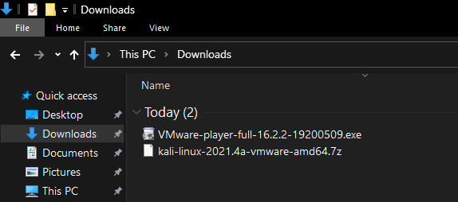
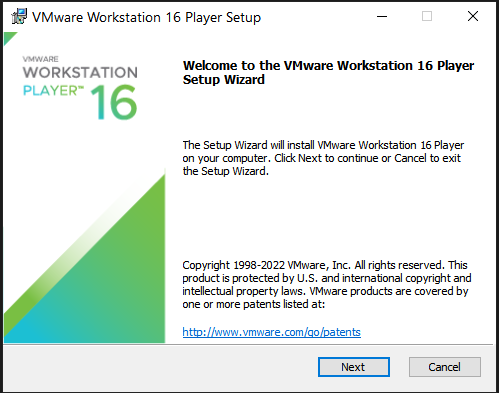
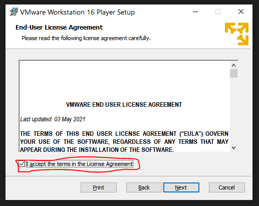
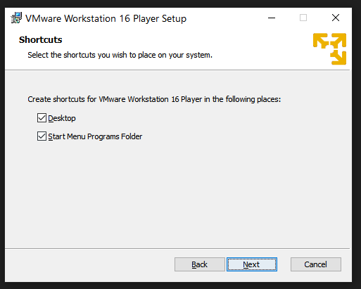
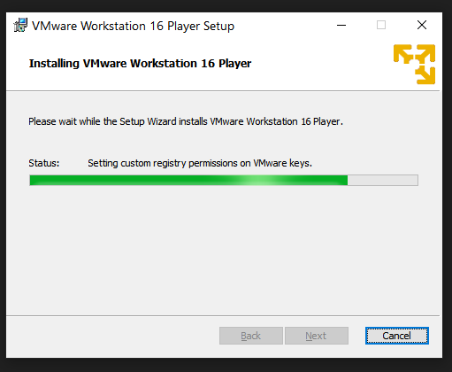
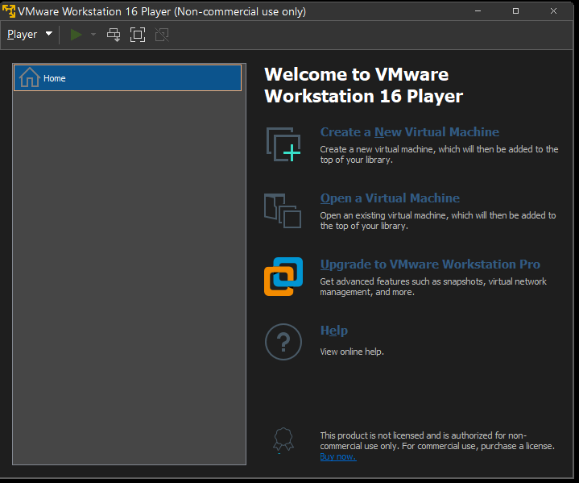
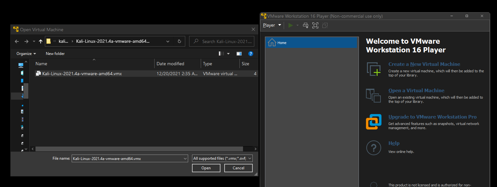
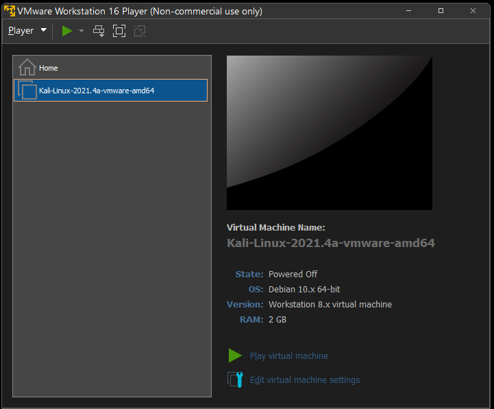
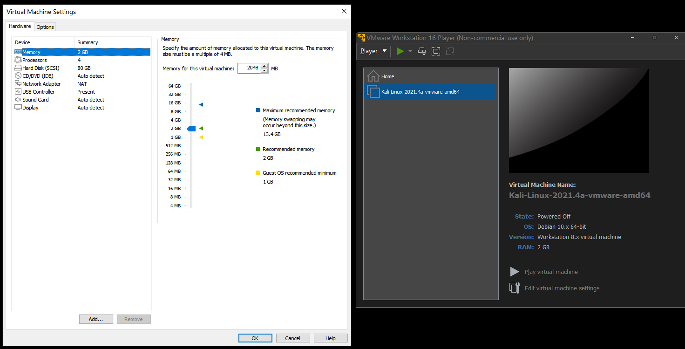

How to install in Kali-Linux in Vmware

Video Tutorial
Installtion of Kali-Linux in Vmware Workstation
First let's see if you computer reach these minimum system requriments.
- Operating System: Windows 10 or 11(I don't have Mac Book, sorry guys)
- Ram: 4GB
- Storage: 60GB
- System Architecture: 32 or 64 bit CPU with 2GHz speed or better with 2 or more Cores
- GPU: System Built-in GPU should work fine
- Network: Obviously we need some Internet connection to update the System or to access Internet
Download (64-bit Kali-Linux) Download (32-bit Kali-Linux)
Second step is to install Vmware Workstation. Again I have linked the download button for Vmware Workstation Workstation(Windows Version).
The source is: https://www.vmware.com/products/workstation-player/workstation-player-evaluation.html
Vmware Version 16.0
If you have downloaded the two files it should look something like this in your downloads folder.

Now let's install Vmware, first double click on the EXE file. Then you should get an Adminstrator Prompt then click Yes, then you will be shown this Prompt

Then click on the Next button and you will be shown Agreement page. Agree to the terms and click on the Next button.

you should see the Custom Setup page, choose you drive to install and be sure to click on the Ehanched keyboard, this allows you to copy and past from your host machine to your Vmware machine.
.PNG)
And then Click on Next button until you see the shortcuts, it is up to you to choose, if you want an shortcut to the desktop or not.

Finally click on Install button, Give some time around 2-5mins

you will be shown with a reboot prompt, then click Yes if are ready to restart or click no if you want to restart manually, but restart is necessary.
Now you have installed Vmware Workstation, you can now unzip the Kali-Linux Files, by right-clicking on the Kali-Linux.7z file and selecting Extract Here(You need 7zip or Winrar to Unzip the file) Any-way I have the download button for Winrar. The source-link: https://www.win-rar.com/download.html?&L=0
Download Winrar(64-bit) Download Winrar(32-bit)
Winrar installation process should be easy, just like any other installation, Now you can unzip the Kali-Linux.7z file by right-clicking on the Kali-Linux.7z file and select Extract Here and then you will be shown with the Kali-Linux folder. Now open Vmware

So you have opened the Vmware, click on Open a Virtual Machine and navigate to the Kali-Linux Folder and select the .vmx File and click open

Now you should have kali-Linux is on your Vmware, you can now start the Kali-Linux by clicking on the Start button.

If you want to change some of the system settings like the amount of processor and memory, you can do it by clicking on the Edit virtual machine settings.
